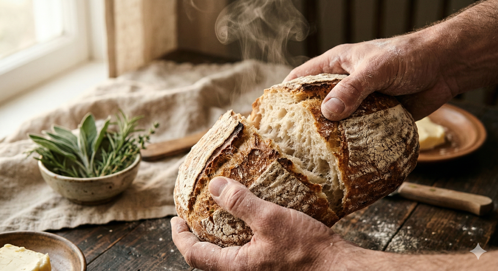

Misiunea Bread & Better este să readucem pe masa fiecărui român gustul autentic al pâinii de altădată. Într-o lume a vitezei, noi am ales să încetinim procesul, folosind doar ingrediente naturale și tehnici artizanale care respectă ritmul biologic al aluatului. Credem că o hrană mai bună înseamnă o viață mai bună.
Nu grăbim procesul. Toată pâinea noastră trece printr-o dospire lentă de 24 de ore cu maia naturală pentru o digestie ușoară și o aromă intensă.
Folosim doar 4 ingrediente de bază: făină, apă, sare și maia. Fără amelioratori, conservanți sau zahăr adăugat în pâinea noastră zilnică.
Colaborăm cu mori locale și producători regionali. Bread & Better nu este doar o afacere, ci un loc de întâlnire pentru iubitorii de gust bun.
Totul a pornit dintr-o bucătărie mică și o nemulțumire mare: lipsa pâinii adevărate din comerț. Am început să experimentăm cu maiaua bunicii și am descoperit că oamenii nu vor doar pâine, ci caută o experiență, un miros care să le amintească de copilărie.
Numele Bread & Better a venit natural: vrem să facem pâinea mai bună (Better) și, prin ea, să facem diminețile clienților noștri un pic mai frumoase.
